higan is rather different from most emulators. Please use this guide to familiarize yourself with higan's features.
Right off the bat, you have many options. First, you can use the 32-bit release, or the 64-bit release. If you have a 64-bit operating system, please use the 64-bit release. It is approximately 10-15% faster than the 32-bit release. If you have a 64-bit processor, please consider upgrading to a 64-bit operating system. Otherwise, the 32-bit release should work.
Next, you have three options for profiles. These currently only affect the speed of the Super Famicom emulation. The other systems are the same regardless of profile used.
The accuracy profile is my personal favorite. It is extremely accurate, but it is also extremely slow. On my Core i7 @ 4.4GHz, I get ~135fps on Zelda 3 (best case), and ~65fps on the most intensive parts of Mega Man X3 (worst case.) If you have an incredibly powerful, top of the line computer, this is what you should use.
The balanced profile tries to strike a middle ground between accuracy and performance. It's still extremely accurate, far above any other Super Famicom emulator. In this case, I get up to ~295fps with Zelda 3 on my system. This version should work great on any Core or Athlon processor.
The performance profile is for slower systems. It sacrifices accuracy to run on slower systems. It's still more accurate than any other Super Famicom emulator, but just barely. In this case, I get up to ~495fps with Zelda 3. I've been able to play Zelda 3 at 80fps on my 1.6GHz Intel Atom with this profile.
If your computer is slower than a $199 netbook from 2007, and you cannot upgrade it, then I sincerely apologize, but higan is not the emulator for you. Even in its fastest profile, higan still puts accuracy as a top priority. I would have to make too many sacrifices to target even slower hardware, and at this point, there are already great emulators that target lower performance hardware.
higan will automatically compile in 32-bit or 64-bit mode, depending on your system. It defaults to the accuracy profile. You can override this with the following commands:
make clean && make profile=accuracy make clean && make profile=balanced make clean && make profile=performance
Game Boy Advance emulation requires the BIOS ROM, which is copyrighted and cannot be distributed with higan. Until you obtain this file, you will not be able to play any Game Boy Advance games with higan.
Since higan focuses on accuracy, there is no high-level emulation of the BIOS as you might find in other emulators.
Obtain the GBA BIOS, which should be 16384 bytes in size. Rename it to "bios.rom", and place it inside the "Game Boy Advance.sys" folder. Windows users will find this folder next to the binaries. Linux users will find this folder in ~/.config/higan
Windows users can skip this section. The Windows binary releases work out of the box.
For Linux, you first have to build the software with the make command. Then you have to install it with the make install command. make install is not optional: it places needed files into required locations for you. If you do not run make install, none of the emulators will work.
Furthermore, if you want ananke, which is necessary to load game files and ZIP archives directly, you must make and make install ananke as well as higan.
Lastly, unlike with Windows, there is no default key assignments for emulated input. You must go to Settings->Configuration->Input, and assign keys for each system you wish to emulate.
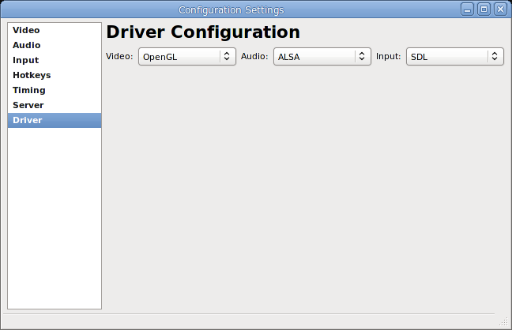
higan supports many video, audio and input drivers. It defaults to the most conservative options.
Windows users will find Direct3D and DirectSound selected by default. I would highly recommend installing official video card drivers from nVidia and AMD to get proper OpenGL hardware acceleration. Do not use the ones bundled with Windows, these drivers have terrible OpenGL support. By using OpenGL, you gain access to many pixel shaders to enhance the video. I would also recommend installing the latest version of DirectX and using the XAudio2 driver. This is only required for Windows Vista and earlier. The XAudio2 driver handles buffer underruns much more gracefully than DirectSound, it will become silent instead of repeating a short sample over and over.
Linux users will find the SDL and ALSA drivers active by default. Again, I highly recommend installing the official binary drivers from nVidia and AMD, if at all possible. The open source drivers such as nouveau offer terrible OpenGL acceleration and will decimate performance. Failing this, you might try the X-Video driver, but it's not as nice. The SDL driver was a necessary evil to work on any Linux setup out of the box, but its performance is absolutely terrible.
You can change driver settings via Settings->Configuration->Drivers. Once you have changed drivers, you must restart higan for the changes to take effect.
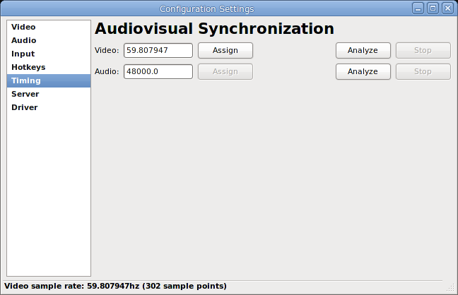
Most emulators offer simplistic synchronization of video and audio. Although your PC monitor usually runs at ~60hz, video game systems usually run at ~60.09hz, or other similar values. This has to be compensated for. Emulators typically duplicate or drop frames to handle this, which results in choppy scrolling every ten seconds or so, usually.
higan is more difficult to set up, but provides much finer grained control. It never duplicates or drops video frames or audio samples. Instead, it very slightly adjusts the audio pitch (by less than 1% usually) to match your specific monitor, video card, and sound card.
higan also lets you choose whether to synchronize to the video refresh rate, the audio refresh rate, or both. Choosing video only will give you smooth video but choppy audio. Choosing audio only will give you choppy video but smooth audio. Choosing both will give you smooth video and audio, but this requires you to use the audiovisual synchronization tool first, in order to work.
Check both "Synchronize Video" and "Synchronize Audio" under Settings, and then go to Settings->Configuration->Timing. Click on the video "Analyze" button, and wait. This will count how many frames your video card outputs per second when synchronized to the vertical refresh, and show you an average at the bottom on the window's status bar. The idea is that the longer you wait, the more precise the value will become. I'd recommend waiting 300 samples, or five minutes. You can often get by with less, but the longer you wait, the more precise the value, which will help prevent video tearing and audio crackling. Once you are ready, hit the "Stop" button, copy the value from the status bar into the video text box, and hit "Assign". Now repeat this process for audio, and you are all set. This only ever has to be done once.
If you are using Windows Vista or Windows 7, you will want to disable the Aero compositor. Use Google for instructions on how to do this. Aero's compositor makes it impossible to get smooth video refreshes. If you are using Windows 8, consider upgrading to Windows 7. Or if you simply cannot or will not disable Aero, then you should uncheck synchronize video, and deal with the video tearing. There's nothing else I can do to help you.
If you are using Linux, disable any desktop compositing. You may also have to mess with nvidia-settings and/or xvattr settings. Some setups simply never allow smooth video and audio at the same time. Linux is very hit or miss, with wildly differing video drivers. I've had great luck on Debian Squeeze, and terrible luck on Xubuntu 12.10.
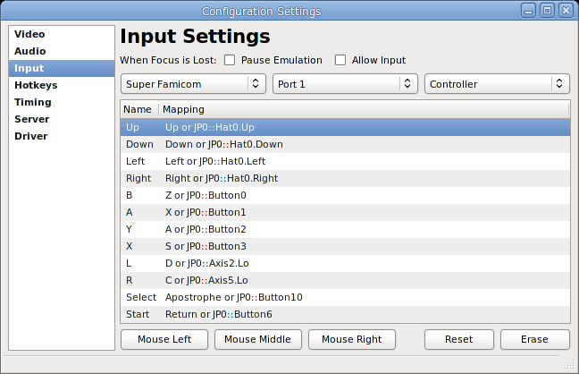
higan supports keyboards, mice and gamepads for input. Often times, you will want to switch between using a keyboard and gamepad to play games. You can configure an emulated controller to use both, by assinging multiple physical inputs to each emulated input.
The way this works is you double-click an item, and press the key or button you wish to assign. Or for mice, click the button at the bottom of the window. Each time you do this, it adds another mapping. If you want to erase all mappings for one input, click erase. If you want to erase all mappings for all inputs, click reset.
Use the first combo box to select the system whose inputs you wish to configure. Then use the second combo box to select the controller port you wish to configure input devices for. Finally, use the third combo box to configure a specific controller.
On this screen, you can also tell higan to pause the emulator when the main emulator window loses focus. Or you can allow input when the window does not have focus. Typically, you don't want to allow input if you plan on using a keyboard, but if you are using a gamepad this option could work for some cases of multi-tasking. It's up to you.
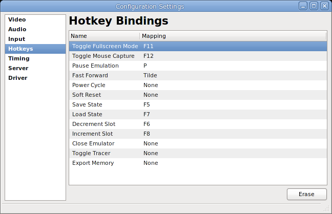
higan allows configuration of various hotkeys. Unlike emulated inputs, hotkeys work a bit differently. Instead of allowing multiple keys to trigger the same action, hotkeys take a list of keys that all have to pressed to trigger the action. For instace, you can require Alt+Enter to trigger fullscreen if you like. The mapping works the same way as with the input settings window otherwise.
Now that higan is configured, we can move on to emulating.
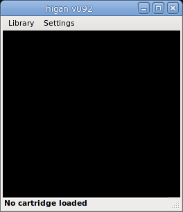
Here, you have your menubar, your video output window, and your status bar.
All windows in higan can be resized and repositioned however you like. higan will remember the geometry of each window, and restore it to how you left it the last time you ran the emulator.
Settings->Video lets you control the video scaling. Center will keep the image centered in the screen. This will put black borders around the edges, but will keep the video output an even multiple of the original resolution. Scale will allow you to increase the size to non-even multiples, but will keep black bars on one side to maintain the correct aspect ratio. Stretch will fill the entire video window no matter what. These settings apply to both windowed mode and fullscreen mode. Aspect Correction will stretch the video to mimic the ratio that you would see when playing games on real hardware. It is highly recommended you leave this option on. Mask Overscan will black out the edges of the screen, much as older CRT televisions would. You can control the exact amount of overscan masking in the Settings->Configuration->Video settings panel. This is mostly useful for Famicom games, where there is frequently garbled graphics on the screen edges due to hardware limitations of the time.
Settings->Shader lets you control the video filtering applied to the final output image. None will give you crisp pixels, but doesn't look so great with aspect correction enabled. Blur will smooth out the pixels. If you have video shaders installed, you will see more options that you can choose from.
Settings->Synchronize Video and Settings->Synchronize Audio tell the emulator to wait for vertical refresh and/or the audio buffer. You should use one or the other. If you follow the audiovisual timing setup above, you can try using both at the same time.
Settings->Mute Audio does exactly what it says.
When you load a game, you are given access to a Tools menu as well.
Here you can choose to create save states, or to restore them. You are given five temporary slots. To be honest, the hotkeys are a lot more convenient for this, but it's there in the menu as well.
Tools->Resize Window will shrink the window to eliminate any black space on the sides. Note that since each emulated system has different resolutions, you will often then end up with black borders on another system. There's no way around this, sorry. Also note that this option does not work with the Scale video mode, for obvious reasons.
Tools->State Manager and Tools->Cheat Editor will be described later.
Finally, the good part.
higan treats your collection of games as a library. The first time you use higan, your library will be empty. Going to Library->Super Famicom will prove fruitless, with no games for you to select.
In order to add games to your library, you have to import them from your collection first.
To import games into your library, choose Library->Import Game.
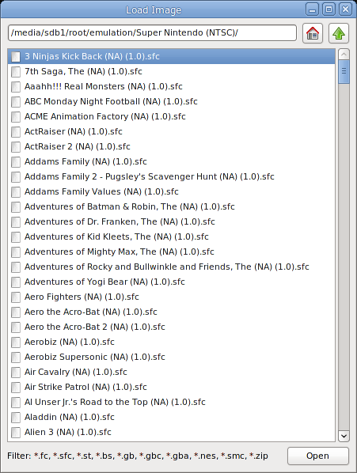
Here, you can navigate and select any game for any system. It can be game file, or a ZIP file with the game inside of it.
Once selected, it will be imported into your library and the game will begin to play.
If you don't like the idea of the game library, then simply ignore it. Use Load->Import Game every single time. The first time you use it, your save games will be imported as well. Subsequent loads will not overwrite your existing save files, so there's no need to worry.
Many people like to have every game ever released. Yet they only play a small fraction of the actual library. It's best to treat higan's library as a way to play the games you actually care about. Not as a game collecting tool where you have to have a 100% complete collection.
Once a game has been imported, you can load it again by choosing Load->{Name of System}, eg Load->Super Famicom.
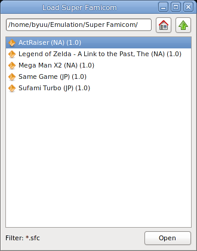
One nice feature of the library is that not only do you get separate paths that are remembered for each emulated system, it also remembers the last game you played and will select it automatically.
Please note that you cannot load game files or ZIP archives directly from the library. You must use Import Game to get games into your library.
At long last, we have the emulator configured, and our games imported into our library. And now it's time to game!
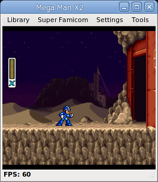
The status bar lets you know the frames per second, the title bar shows you the name of the game you are playing.
And now you have a new menu option for the system you are playing. In this case, we have Super Famicom. From this menu, you can power cycle the system, or hotplug other gamepads, or even unload the system.
There's not much point in unloading a cartridge. You can simply load another cartridge directly and higan will automatically unload the current cartridge for you. But if you want to save CPU resources, and leave higan open, you can.
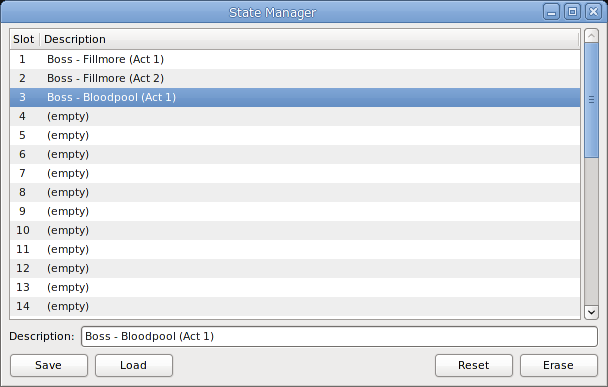
In addition to save states, higan also has a state manager. The idea is that sometimes you want transitive states that you overwrite constantly, and sometimes you want to keep states around for a long time, and keep them nice and organized. The state manager lets you accomplish the latter.
In this example, we are building an archive of states before each boss fight in Actraiser. Once complete, we can easily skip to every boss fight at any time. The possibilities are endless, use this tool however you like, or not at all.
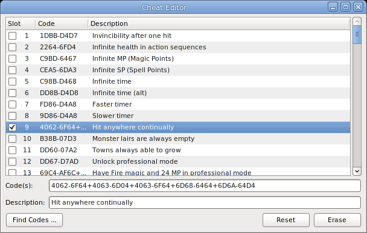
Here, you can enter cheat codes. Game Genie, Pro Action Replay, etc.
As you can see from the selection, you can build cheats from one or more codes, separated by the + symbol. This lets you quickly turn on and off multi-part cheat codes.
At the bottom left, there's a Find Codes button. After selecting it, higan will use its internal database of cheat codes to see if it can find any for the game you are currently playing. There's thousands of games in the database, but not every game has known cheats for it. If it does find any, you will be presented with a list, and you can import any cheats you want. Far more convenient than searching the web for cheats that may be for the wrong revision, or the wrong country, of the game.
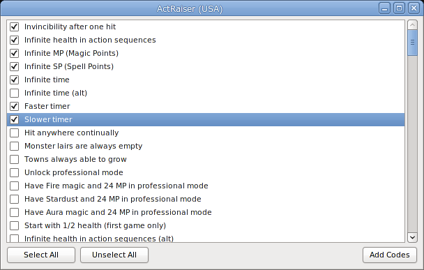
Select the code(s) you want, hit Add Codes, and you're done!
The cheat database is graciously developed by the wonderful mightymo from the forums at http://board.byuu.org; so if you have codes you'd like to see in the database, feel free to reach out to him there.
Settings->Configuration->Video will allow you to adjust the image saturation, gamma, and luminance. It also lets you control how much video the Mask Overscan option crops off.
Settings->Configuration->Audio will let you adjust the audio volume. This is nice as Nintendo systems typically have very low volume output compared to other things. A setting of 200% can prove useful with little to no clamping of sample range. You can also increase the frequency for more resampling precision, lower the latency for faster audio response to input, and control the resampling algorithm used. The Sinc audio resampler is incredibly demanding, consuming more than half of the CPU power when emulating the NES and Game Boy, however it is necessary to prevent some buzzing that you'll get in games such as Mega Man II for the Famicom otherwise. If you really need more performance, you can go with another sampler instead.
Settings->Configuration->Server can be used to allow patched games to communicate with a server on the internet. This allows for cool features like uploading your high scores automatically, special internet-based events, etc. For right now, there are no available patches, but in the future this should prove to be quite fun.
For the power user, you can edit the settings.cfg file to control even more settings. Windows users should press Win+R, and type "%APPDATA%/higan" and press enter. Linux users should go to ~/.config/higan. Open the file named settings.cfg with a text editor. Preferably Notepad2 or Notepad++ on Windows.
Set Video::StartFullScreen to true if you want to use higan with an HTPC, and want to load games from a launcher. You will need to remember the hotkey to exit fullscreen if you use this setting, so make note of it first.